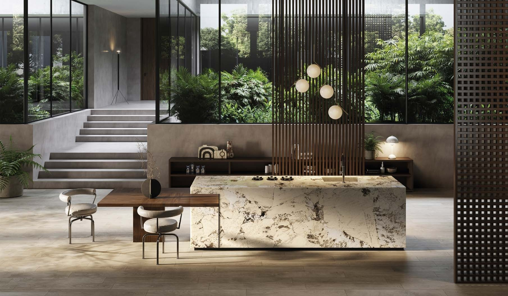
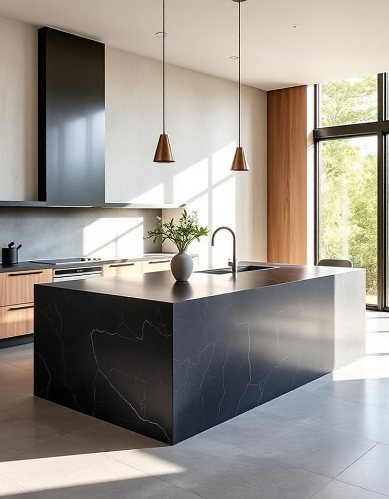
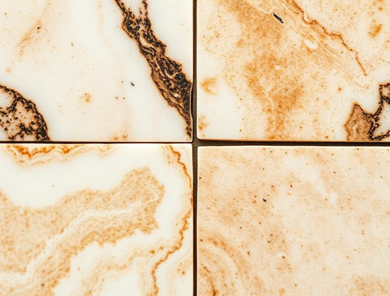

Lavorazione artigianale di marmi, graniti e gres porcellanato per l'architettura d'interni d'eccellenza.
Siamo Partner Ufficiale XTONE, il prestigioso brand di superfici di grande formato del
Gruppo Porcelanosa.
Una partnership che testimonia il livello tecnico e
qualitativo delle nostre lavorazioni e che ci consente di offrire competenza
specializzata nella trasformazione e lavorazione delle superfici XTONE.
Tecnologia, esperienza e qualità Made in Italy al servizio dei progetti più
ambiziosi.
Dalla lastra grezza al dettaglio millimetrico. Realizziamo superfici che definiscono lo spazio domestico con la forza della pietra naturale e l'innovazione del gres porcellanato.


Una selezione di realizzazioni firmate Euromarmi: cucine, bagni, scale e opere d'arte funeraria.
Tutto è iniziato quasi trent'anni fa dalla passione di un giovane ragazzo per la lavorazione del marmo. Da allora, ogni lastra viene selezionata personalmente nelle cave e nei centri di produzione del gres in Italia, e ogni progetto viene seguito con la stessa cura del primo giorno: qualità impeccabile, precisione millimetrica e posa in opera curata fin nel minimo dettaglio.
Laboratorio
Via Anguillarese km 1.200, 00123 Roma (RM)Orari
Lun — Ven · 08:00 — 13:00 / 14:00 — 17:00
Sab · su appuntamento